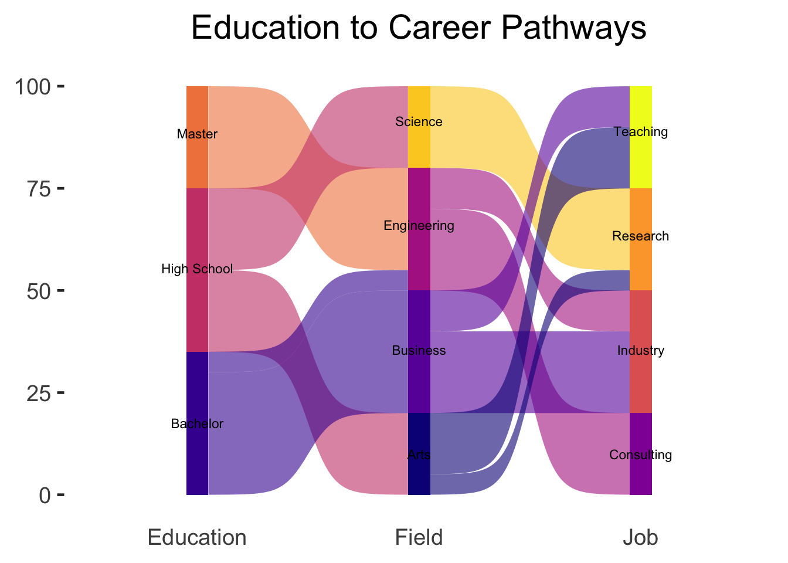

The ggsankey package in R is an extension of the
ggplot2
package, designed to
create flow visualizations.
This post
showcases the key features of
ggsankey and provides a set of
diagram examples using the package.
{ggsankey}
The ggsankey package in R is an extension of the
ggplot2
package, designed to create flow visualizations.
It offers a set of functions that make it easy to specify flow diagrams in a declarative manner.
✍️ author → David Sjoberg
üìò documentation → github
⭐️ more than 250 stars on github
To get started with ggsankey, you can install its
developpment version directly from Github using the
install_github() function:
The ggsankey package extends the grammar of graphics to
include the description of flow diagrams, specifically, sankey,
alluvial and sankey bump diagrams. You start with a dataframe in wide
format, transform it using the make_long() function, and
then add flow-specific layers to your ggplot.
Here’s a basic example where we show how dimensions are linked using a sankey diagram:
library(tidyverse)
library(ggsankey)
# Create a simple dataset about education and career paths
df <- data.frame(
education = c(rep("High School", 40), rep("Bachelor", 35), rep("Master", 25)),
field = c(rep("Science", 20), rep("Arts", 20), rep("Business", 30), rep("Engineering", 30)),
job = c(rep("Research", 25), rep("Teaching", 25), rep("Industry", 30), rep("Consulting", 20))
)
# Convert to long format for Sankey diagram
df_long <- df %>%
make_long(education, field, job)
# Create the diagram
ggplot(df_long,
aes(x = x,
next_x = next_x,
node = node,
next_node = next_node,
fill = factor(node))) +
geom_sankey() +
scale_fill_discrete(drop=FALSE)
Labels with geom_sankey_label()nicely places labels in
the center of nodes if given the same aesthetics.
ggsankey also comes with custom minimalistic themes
that can be used. Here we use theme_sankey():
ggplot(df_long,
aes(x = x,
next_x = next_x,
node = node,
next_node = next_node,
fill = factor(node))) +
geom_sankey(alpha = 0.8) +
scale_fill_viridis_d(option = "plasma", name = "Category") +
theme_sankey(base_size = 14) +
labs(title = "Education to Career Path Flow",
x = NULL) +
theme(legend.position = "bottom",
legend.title = element_text(hjust = 0.5),
legend.box.just = "center",
plot.title = element_text(hjust = 0.5),
axis.text.y = element_blank(),
axis.ticks = element_blank()) +
scale_x_discrete(labels = c("Education", "Field", "Job"))
Alluvial diagrams are very similiar to sankey diagrams but have no spaces between nodes and start at y = 0, instead of being centered around the x-axis.
This diagram shows how individuals progress from their education
level through their field of study to their eventual job role. The
geom_alluvial() function creates smooth flowing bands
between the nodes, with the
width of each band representing the number of
individuals following each path.
ggplot(df_long,
aes(x = x,
next_x = next_x,
node = node,
next_node = next_node,
fill = factor(node),
label = node)) +
geom_alluvial(flow.alpha = .6) +
geom_alluvial_text(size = 3, color = "black", space = 0.5) + # Adjusted space and changed text color
scale_fill_viridis_d(option = "plasma", drop = FALSE) +
theme_alluvial(base_size = 18) +
labs(x = NULL) +
theme(legend.position = "none",
plot.title = element_text(hjust = .5)) +
ggtitle("Education to Career Pathways") +
scale_x_discrete(labels = c("Education", "Field", "Job"))
Sankey bump plots combine characteristics of bump charts and Sankey diagrams, visualizing how rankings and volumes change over time. When a group’s value surpasses another, it shifts upward in the visualization, creating a distinctive “bumping” effect.
This visualization shows how different renewable energy sources have
contributed to global electricity generation from 2000 to 2023. The
geom_sankey_bump() function creates flowing streams
that expand or contract to show changes in generation capacity, with
technologies shifting positions when their relative contribution
changes over time.
library(tidyverse)
library(ggsankey)
# Read and prepare the data
renewable_data <- read.csv("https://ourworldindata.org/grapher/modern-renewable-prod.csv?v=1&csvType=filtered&useColumnShortNames=true") %>%
# Select last 10 years for better visualization
filter(Year >= 2000) %>%
pivot_longer(
cols = c(wind_generation__twh, hydro_generation__twh,
solar_generation__twh, other_renewables_including_bioenergy_generation__twh),
names_to = "technology",
values_to = "generation"
) %>%
mutate(
technology = case_when(
technology == "wind_generation__twh" ~ "Wind",
technology == "hydro_generation__twh" ~ "Hydro",
technology == "solar_generation__twh" ~ "Solar",
technology == "other_renewables_including_bioenergy_generation__twh" ~ "Other Renewables"
)
)
# Create the plot
ggplot(renewable_data,
aes(x = Year,
node = technology,
fill = technology,
value = generation)) +
geom_sankey_bump(space = 0,
type = "alluvial",
color = "transparent",
smooth = 6) +
scale_fill_viridis_d(option = "inferno", alpha = .8) +
scale_x_continuous(breaks = scales::pretty_breaks(), expand = c(0,0)) +
scale_y_continuous(labels = scales::comma, expand = c(0,0)) +
theme_sankey_bump(base_size = 16) +
labs(x = NULL,
y = "Electricity Generation (TWh)",
fill = "Technology",
title = "Global Renewable Energy Generation by Source",
subtitle = "Period: 2000-2023",
caption = "Data sources: Ember (2024), Energy Institute - Statistical Review of World Energy (2024)\nProcessed by Our World in Data") +
theme(legend.position = "bottom",
legend.title = element_text(hjust = 0.5),
legend.title.position = "top",
plot.caption = element_text(hjust = 0, size = 10, face = "italic"))
üëã After crafting hundreds of R charts over 12 years, I've distilled my top 10 tips and tricks. Receive them via email! One insight per day for the next 10 days! üî•